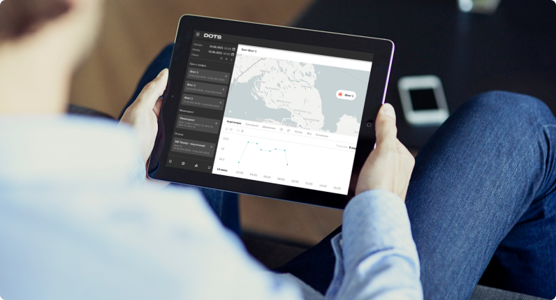

Система аналитики данных (DOTS)

Программно-аппаратный комплекс DOTS — один из элементов в цепочке системы контроля транспорта. Он собирает статистику о процессах работы техники и выводит ее на экран для анализа.
Это инструмент глубокой аналитики, благодаря которому пользователь может выстраивать отчеты о работе объекта за выбранные периоды, контролировать процессы передачи топлива, систематизировать информацию и на ее основе принимать упрвленческие решения.
Какие данные будут выводиться на экран DOTS?
В каком формате будет представлена информация в отчетах?
Для чего нужна DOTS?
Система DOTS — это конечная точка, в которой сводятся все показатели и параметры объекта мониторинга. Датчики, которые непосредственно установлены на объекте мониторинга, фиксируют данные на месте, бортовой контроллер VMTS обрабатывает эти данные и транслирует их оперативно на экран, а затем они попадают в систему DOTS, где их можно комплексно анализировать.
Система DOTS позволяет выполнять следующие функции:
Зайти в систему DOTS можно с любого удобного устройства: телефона, ПК, ноутбука или планшета.
Для какого транспорта устанавливают систему DOTS?
Система успешно применяется на:
Как с помощью DOTS можно сократить расходы на обслуживание транспорта?
DOTS — это звено системы, на основе которого можно выстраивать управление всей транспортной инфраструктурой. Программно-аппаратный комплекс помогает пресечь систематические нарушения в эксплуатации объекта, обнаружить хищения топлива, определить недобросовестных подрядчиков и отследить эффективность работы отдельных узлов транспорта.
Проведя анализ с помощью DOTS, вы сможете:
Только на автоматизации операций с топливом возможно снизить расходы на миллионы рублей в год.
3-6 месяцев — среднее время окупаемости системы контроля транспорта. Наши клиенты уже успели попробовать эту технологию и получили следующие результаты: